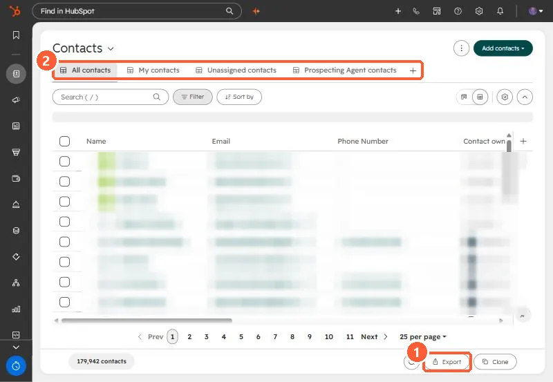
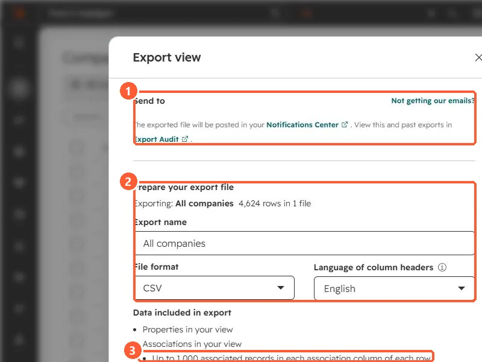
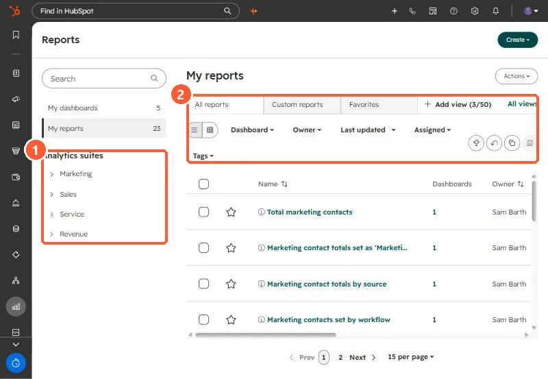
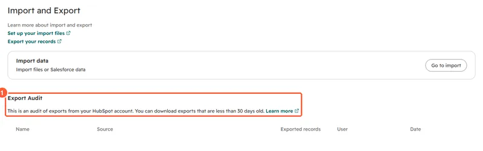

Short answer
Export records from the view you have open: Export at the bottom of the index page sends a download link by email, and the link expires after 30 days. Segments export from CRM, Segments, More, Export but cannot include associated records. Reports export as CSV or Excel. Calls and notes cannot be exported from the record index, but the exports API handles them: I exported 22 calls and 49 notes with their bodies from my demo portal on November 15, 2026. Everything needs the Export permission.
1. Export records from a view
Open Contacts (or companies, deals, tickets, or a custom object), pick or filter the view, and click Export at the bottom of the table (1). The export uses the view that is open (2), so set the filters first.


In the export dialog you choose where the link is sent, the file format and what goes in the file:


- Properties and associations in your view (default): the view's columns, in the view's order.
- All properties on records: every property, no associations.
- All properties and associations on records: the widest file.
- Associations: up to 1,000 associated record IDs and names per association column by default, or all associated records (CSV only).
- Language of column headers: useful when your team works in more than one language.
To import the file back later to update the same records, keep the Record ID column. HubSpot matches on it.
2. File formats and limits
| Limit | Value |
|---|---|
| Formats | CSV, XLSX, XLS |
| Rows per file | 1,000,000 for CSV and XLSX, 65,535 for XLS. Larger exports come as multiple files. |
| Columns | 16,384 for XLSX, 256 for XLS |
| Zipping | CSV files over 2MB are zipped automatically |
| Exports per day | 300 in a rolling 24 hours, up to three at once |
| Download link | Expires after 30 days |
| Associated records | 1,000 per association column unless you choose all (CSV only) |
Use CSV for anything large. XLS hits its row limit at 65,535, which is easy to pass on a contacts export.
3. Export a segment
- Go to CRM, Segments.
- Hover over the segment, click More, then Export.
- Tick the properties to include, or Select all properties, then Next.
- Choose the file format and header language, then Export. The download link arrives by email.
The catch: a segment export cannot include associated records. If you add associated company properties, you only get the primary company's values. When you need contacts with their companies or deals, filter a contact view to match the segment and export the view instead.
If the Export option is missing, the user does not have the Export permission. A Super Admin can add it in Users & Teams.
4. Export reports
From Reporting, Reports (1), open a report and use Export to download it as CSV, XLS or XLSX, or share it by email. Recurring emails can go out daily, weekly or monthly.


- Single-object reports export the properties in the Selected properties section. Custom reports export the fields on the Configure tab.
- Only single object, event-based and customer journey reports can be sent as file attachments by email.
- Web analytics reports, reports with email as the data type, annotations, unified data type reports and sales analytics widgets cannot be sent as attachments.
- Managing a recurring report email needs Super Admin or report ownership. Sending dashboard data once to someone outside the account needs Professional or Enterprise and admin-level Reporting permissions.
If you want a live Google Sheet instead of a file, a workflow can write rows to it. See the Google Sheets workflow action.
5. Export calls, notes and other activities
This is the most asked export question on the HubSpot Community, going back to 2019: how do I get call logs and notes into a spreadsheet? The record index has no Export for activities. HubSpot's KB lists three routes: export one contact's data, export certain activity reports, or use the API.
The API route turned out to be simpler than expected. The exports API accepts activity objects as the objectType. On my Enterprise demo portal on November 15, 2026:
POST https://api.hubapi.com/crm/exports/2026-09/export/async
{
"exportType": "VIEW",
"exportName": "All calls",
"format": "CSV",
"language": "EN",
"objectType": "CALL",
"objectProperties": ["hs_call_title", "hs_call_body", "hs_timestamp"]
}CALLreturned a CSV of 22 calls with the columns Record ID, Call Title, Call notes, Activity date, Create date and Last modified date, in under a second.NOTEwithhs_note_bodyreturned 49 notes with the full note body.EMAILwas accepted too.
The response is a task ID and a status link. Poll the link until status is COMPLETE, then download the file from result. The API has tighter limits than the interface:
- 30 exports in a rolling 24 hours, and one at a time. Others queue until the current one finishes. In my test a 180,000-record contact export was still processing after eight minutes, and the call and email exports I started after it sat in
PENDINGthe whole time. Start small exports first. - The download URL expires five minutes after the export completes, so download it in the same script that polls.
- Up to four associated objects per request, with 1,000 associations per row by default.
- It needs the
crm.exportscope on your private app. See private apps and service keys.
Two details from the test that the docs do not cover: the status link pointed at the /crm/v3/ path even though I started the export on /2026-09/, and the file host returned 403 to a download request with no User-Agent header. Set one.
To see which contact each call belongs to, add "associatedObjectType": "CONTACT" to the request.
6. See who exported what
Every export is logged under Settings, Data Management, Import & Export, in Export Audit (1). Super Admins see every user's exports, other users see only their own, and files from the last 30 days can be downloaded again from there.


One thing I noticed: the six API exports I ran that morning did not appear in this list. Treat the audit as a log of exports made in the HubSpot interface, and track API exports in your own code.
Super Admins can also turn on a notification for large exports, with a threshold of up to 275,000 records, so they hear about it when someone exports most of the database.
7. What is changing for 2027
- The exports API has a date-based version. The current docs use
/crm/exports/2026-09/export/async. The older/crm/v3/exports/export/asyncpath is now under HubSpot's legacy docs. v3 endpoints keep working for now, and HubSpot says their support timeline will be announced later, so new scripts should use the dated path. See API rate limits and versioning. - Segments, not lists. HubSpot now calls lists segments throughout the app and KB, and the menu is CRM, Segments. Older guides that tell you to go to Contacts, Lists are describing the same feature.
- Exports are a security question now. The audit log and large-export notifications exist because an export is the easiest way to take a whole CRM out of a company. Review who has the Export permission when people change roles.
Common questions
Why can't I see the Export button?
The user is missing the Export permission. It is separate from view and edit access, so a user can see every record and still not be able to export them.
The export email never arrived. Where is the file?
Check Settings, Data Management, Import & Export. Exports from the last 30 days can be downloaded from the Export Audit list. Large exports also take a while to build, so give it a few minutes before assuming it failed.
How do I export contacts with their company name?
Export a contact view with associations included, not a segment. The associated company column holds the company's name and Record ID.
Can I export a single contact's full history?
HubSpot has a separate export for an individual contact's data, linked from its export KB article. For activities across many contacts, use the exports API with the activity object.
Can I schedule a recurring export?
Not for record views. Reports can be emailed daily, weekly or monthly as a file, and a script can call the exports API on a schedule, within its 30 a day.
Sources
- HubSpot Knowledge Base: Export your records
- HubSpot Knowledge Base: Export segments
- HubSpot Knowledge Base: Share or export reports and dashboards
- HubSpot Knowledge Base: Set up export notifications and view a log of exports
- HubSpot Knowledge Base: Export individual contact data
- HubSpot developer docs: Exports API
- HubSpot developer docs: Exports API (legacy v3)
- HubSpot Community: How do export call logs and contact notes?
- HubSpot Community: Can't export my contacts list
- HubSpot Community: Simple report export to Google Sheets